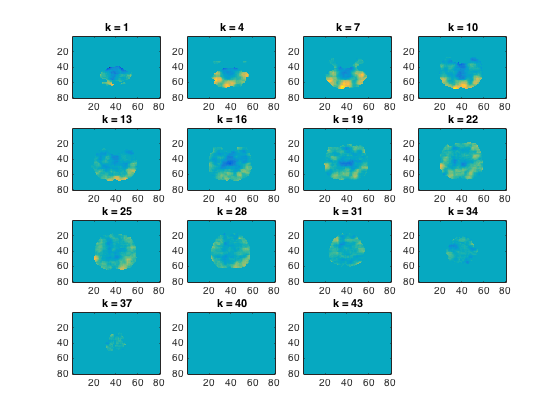

Demo: fMRI searchlights with split-half correlations, classifier, and representational similarity analysis
The data used here is available from http://cosmomvpa.org/datadb.zip
This example uses the following dataset: - 'ak6' is based on the following work (please cite if you use it): Connolly et al (2012), Representation of biological classes in the human brain. Journal of Neuroscience, doi 10.1523/JNEUROSCI.5547-11.2012
Six categories (monkey, lemur, mallard, warbler, ladybug, lunamoth) during ten runs in an fMRI study. Using the General Linear Model response were estimated for each category in each run, resulting in 6*10=60 t-values.
- For CoSMoMVPA's copyright information and license terms, #
- see the COPYING file distributed with CoSMoMVPA. #
Contents
Set data paths
The function cosmo_config() returns a struct containing paths to tutorial data. (Alternatively the paths can be set manually without using cosmo_config.)
config=cosmo_config(); ak6_study_path=fullfile(config.tutorial_data_path,'ak6'); % show readme information readme_fn=fullfile(ak6_study_path,'README'); cosmo_type(readme_fn); % reset citation list cosmo_check_external('-tic'); % set result directory output_path=config.output_data_path;
# # # ##### ######
# # # # # # # # ## ##### ##
# # # # # # # # # # # #
# # ### ##### ###### # # # # # # #
####### # # # # # # ###### # ######
# # # # # # # # # # # # #
# # # # ##### ###### # # # # #
Overview
--------
fMRI responses to viewing images of six species in the animal kingdom,
used in Connollly et al. 2012.
Contents
--------
- s0[1-8]/ This directory contains fMRI data from 8 of the 12
participants studied in the experiment reported in
Connolly et al. 2012 (Code-named 'AK6' for animal
kingdom, 6-species). Each subject's subdirectory
contains the following data:
- glm_T_stats_perrun.nii A 60-volume file of EPI-data preprocessed using
AFNI up to and including fitting a general linear
model using 3dDeconvolve. Each volume contains the
t-statistics for the estimated response to a one
of the 6 stimulus categories. These estimates were
calculated independently for each of the 10 runs
in the experiment.
- glm_T_stats_even.nii Data derived from glm_T_stats_perrun.nii.
- glm_T_stats_odd.nii Each is a 6-volume file with the T-values averaged
across even and odd runs for each category.
- brain.nii Skull-stripped T1-weighted anatomical brain image.
- brain_mask.nii Whole-brain mask in EPI-space/resolution.
- vt_mask.nii Bilateral ventral temporal cortex mask similar to
that used in Connolly et al. 2012.
- ev_mask.nii Bilateral early visual cortex mask.
- models
- behav_sim.mat Matlab file with behavioural similarity ratings.
- v1_model.mat Matlab file with similarity values based on
low-level visual properties of the stimuli.
Methods
-------
The stimulus-specific volumes in the stats T-stats file are in the order
monkey, lemur, mallard (duck), warbler, ladybug, lunamoth
for each of the ten runs.
Reference
---------
When using this dataset for any publication please cite:
Connolly, A. C. , Guntupalli, J. S. , Gors, J. , Hanke, M. , Halchenko, Y. O.,
Wu, Y. , Abdi, H. and Haxby, J. V. (2012). Representation of biological classes
in the human brain. Journal of Neuroscience, 32, 2608-2618.
[PDF] DOI: 10.1523/JNEUROSCI.5547-11.2012,
Contact
-------
Andrew C. Connolly <andrew.c.connolly |at| dartmouth.edu>
Example: split-half correlation measure (Haxby 2001-style)
%%%%%%%%%%%%%%%%%%%%%%%%%%%%%%%%%%%%%%%%%%%%%%%%%%%%%%%%%%%%%%% % This example uses the 'ak6' dataset % define data filenames & load data from even and odd runs data_path=fullfile(ak6_study_path,'s01'); % data from subject s01 mask_fn=fullfile(data_path, 'brain_mask.nii'); % whole brain mask data_odd_fn=fullfile(data_path,'glm_T_stats_odd.nii'); ds_odd=cosmo_fmri_dataset(data_odd_fn,'mask',mask_fn,... 'targets',1:6,'chunks',1); data_even_fn=fullfile(data_path,'glm_T_stats_even.nii'); ds_even=cosmo_fmri_dataset(data_even_fn,'mask',mask_fn,... 'targets',1:6,'chunks',2); % Combine even and odd runs ds_odd_even=cosmo_stack({ds_odd, ds_even}); % print dataset fprintf('Dataset input:\n'); cosmo_disp(ds_odd_even); % Use cosmo_correlation_measure. % This measure returns, by default, a split-half correlation measure % based on the difference of mean correlations for matching and % non-matching conditions (a la Haxby 2001). measure=@cosmo_correlation_measure; % define spherical neighborhood with radius of 3 voxels radius=3; % voxels nbrhood=cosmo_spherical_neighborhood(ds_odd_even,'radius',radius); % Run the searchlight with a 3 voxel radius corr_results=cosmo_searchlight(ds_odd_even,nbrhood,measure); % print output fprintf('Dataset output:\n'); cosmo_disp(corr_results); % Plot the output cosmo_plot_slices(corr_results); % Define output location output_fn=fullfile(output_path,'corr_searchlight.nii'); % Store results to disc cosmo_map2fmri(corr_results, output_fn); % Show citation information cosmo_check_external('-cite');
Dataset input:
.samples
[ -0.0375 0.267 2.71 ... 0.581 0.564 0.55
0.145 0.457 1.3 ... 0.158 0.685 0.728
-0.269 -0.317 1.59 ... 0.11 0.616 -0.271
: : : : : :
-0.811 -1.1 1.19 ... 0.623 0.244 1.21
-0.38 0.00723 1.1 ... 1.69 1.69 -0.0664
-0.713 -1.1 0.638 ... 0.622 0.71 0.526 ]@12x43822
.sa
.chunks
[ 1
1
1
:
2
2
2 ]@12x1
.targets
[ 1
2
3
:
4
5
6 ]@12x1
.fa
.i
[ 31 32 36 ... 34 35 34 ]@1x43822
.j
[ 17 17 17 ... 35 35 36 ]@1x43822
.k
[ 1 1 1 ... 39 39 39 ]@1x43822
.a
.fdim
.labels
{ 'i'
'j'
'k' }
.values
{ [ 1 2 3 ... 78 79 80 ]@1x80
[ 1 2 3 ... 78 79 80 ]@1x80
[ 1 2 3 ... 41 42 43 ]@1x43 }
.vol
.mat
[ 3 0 0 -122
0 3 0 -114
0 0 3 -11.1
0 0 0 1 ]
.xform
'scanner_anat'
.dim
[ 80 80 43 ]
+00:00:14 [####################] -00:00:00 mean size 111.5
+00:00:43 [####################] -00:00:00
Dataset output:
.a
.fdim
.labels
{ 'i'
'j'
'k' }
.values
{ [ 1 2 3 ... 78 79 80 ]@1x80
[ 1 2 3 ... 78 79 80 ]@1x80
[ 1 2 3 ... 41 42 43 ]@1x43 }
.vol
.mat
[ 3 0 0 -122
0 3 0 -114
0 0 3 -11.1
0 0 0 1 ]
.xform
'scanner_anat'
.dim
[ 80 80 43 ]
.fa
.nvoxels
[ 41 48 52 ... 41 41 38 ]@1x43822
.radius
[ 3 3 3 ... 3 3 3 ]@1x43822
.center_ids
[ 1 2 3 ... 4.38e+04 4.38e+04 4.38e+04 ]@1x43822
.i
[ 31 32 36 ... 34 35 34 ]@1x43822
.j
[ 17 17 17 ... 35 35 36 ]@1x43822
.k
[ 1 1 1 ... 39 39 39 ]@1x43822
.samples
[ 0.0597 0.0884 0.347 ... 0.0876 0.125 0.0789 ]@1x43822
.sa
.labels
{ 'corr' }
If you use CoSMoMVPA and/or some other toolboxes for a publication, please cite:
J. Shen. NIFTI toolbox. available online from http://www.mathworks.com/matlabcentral/fileexchange/8797-tools-for-nifti-and-analyze-image
N. N. Oosterhof, A. C. Connolly, J. V. Haxby (2016). CoSMoMVPA: multi-modal multivariate pattern analysis of neuroimaging data in Matlab / GNU Octave. Frontiers in Neuroinformatics, doi:10.3389/fninf.2016.00027.. CoSMoMVPA toolbox available online from http://cosmomvpa.org
The Mathworks, Natick, MA, United States. Matlab 8.5.0.197613 (R2015a) (February 12, 2015). available online from http://www.mathworks.com
